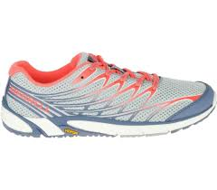
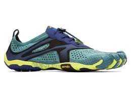
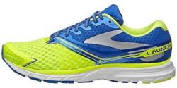
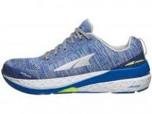
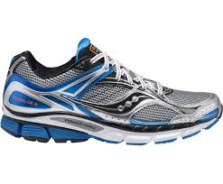
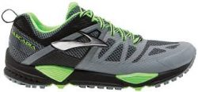
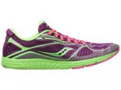

Nke alphafly2
adidas pro evo
glycerin sthealthfit 21
Nike invincible 3
text
text
text
text
Benvenuto alla sezione running del nostro sito
La scarpe A0, chiamate anche minimaliste hanno un peso che oscilla tra 200/350 grammi e sono consigliate per i runner che nel corso dell’allenamento compiono ripetute veloci. A queste scarpe sono stati tolti tutti quegli elementi considerati superflui o poco efficaci e la suola è costituita da un unico strato. Solitamente il differenziale, ovvero la differenza tra pianta e tallone, una sorta di tacco per rendere più semplice l’idea, non supera i 10 mm di altezza.
La scarpe A1 sono dette anche superleggere e hanno un peso inferiore ai 250 g. Sono quindi calzature leggerissime, tra le meno pesanti in circolazione per quanto riguarda il running. Esse sono consigliate sopratutto ai corridori esperti e a coloro che sono soliti fare gare. Non sono ammortizzate ma sono adatte per la corsa veloce in quanto aiutano il passo ad essere più scattante e conferiscono al gesto della corsa una maggiore reattività. Non sono adatte per tutti coloro che hanno una postura scorretta né per le persone che superano i 70 kg di peso.
Le calzature da running A2 o intermedie, sono anch’esse molto leggere ma il loro peso può raggiungere i 300 g. A differenza delle A1 possiedono una discreta ammortizzazione e alcune presentano nella loro struttura anche dei supporti. Sono consigliate per tutti coloro che quando corrono, anche durante la gara, desiderano avere un minimo di stabilità in più. Si tratta comunque di calzature altamente tecniche e non devono quindi essere utilizzate da un corridore alle prime armi.
Le Scarpe A3 sono anche chiamate neutre. Esse forniscono un forte ammortizzamento e quindi sono l’ideale per un gran numero di corridori (soprattutto i neofiti che ancora non hanno sviluppato un’adeguata muscolatura del piede). Il loro peso supera i 300 g e può arrivare a 400 nei casi delle più pesanti. Non sono la calzatura ideale per chi fa gare o per chi si allena a scopi agonistici e desidera quindi un’altra prestazione ma possono essere un’ottima alternativa per chi corre per piacere e non vuole dover rinunciare ad una scarpa confortevole a massimo ammortizzamento. Queste scarpe sono perfette anche per quei corridori che prediligono la corsa lenta e per coloro che arrivano fino agli 80 kg di peso.
Le scarpe A4 sono chiamate anche stabili e solitamente pesano come le A3, sono indicate per chi non ha un buon controllo del piede durante la corsa. Dotate di supporti che non permettono l’iperpronazione, ovvero un esagerato carico della parte interna del piede hanno un livello di ammortizzamento alto. Questa calzatura è inoltre consigliata per tutti coloro che superano gli 80 kg di peso.
Le A5 o trail running pesano quanto le A3 e le A4 e vanno bene sia per la corsa veloce che per quella più lenta. Si tratta di calzature molto solide, che hanno lo scopo di proteggere il piede del podista. Si usano per correre fuoristrada, quindi non sull’asfalto, ma su suoli sterrati anche accidentati. La presa sul terreno di queste calzature è studiata per avere un grip superiore. In questo caso la prestazione è messa in secondo piano rispetto alla sicurezza che la scarpa ha il compito di conferire.
Le A6 sono definite scarpe da jogging, la loro capacità di ammortizzare il contatto con il suolo è sufficiente per chi corre saltuariamente e soprattutto su terreni non sconnessi, stesso dicasi per la loro stabilità e le doti elastiche di tomaia e intersuola. Sostanzialmente è una scarpa che non ha doti particolari e che secondo il nostro parere non dovrebbe essere utilizzata da chi fa running quotidianamente.
